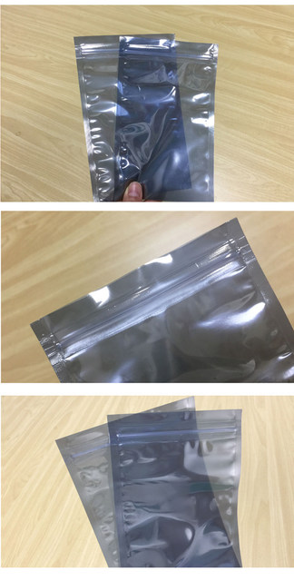
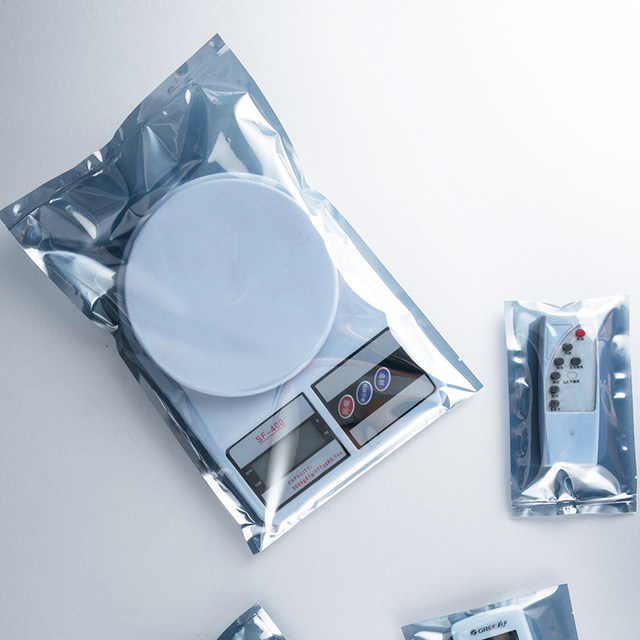
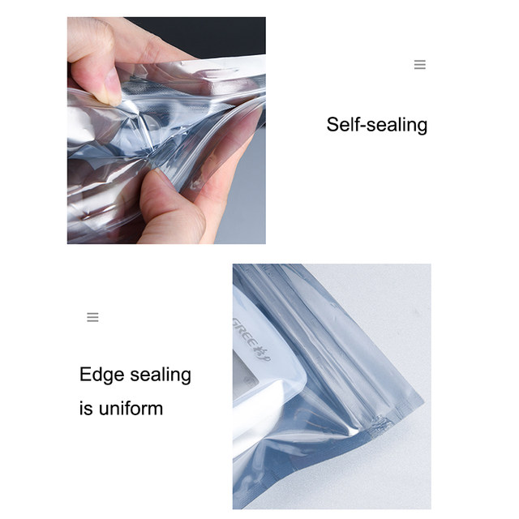
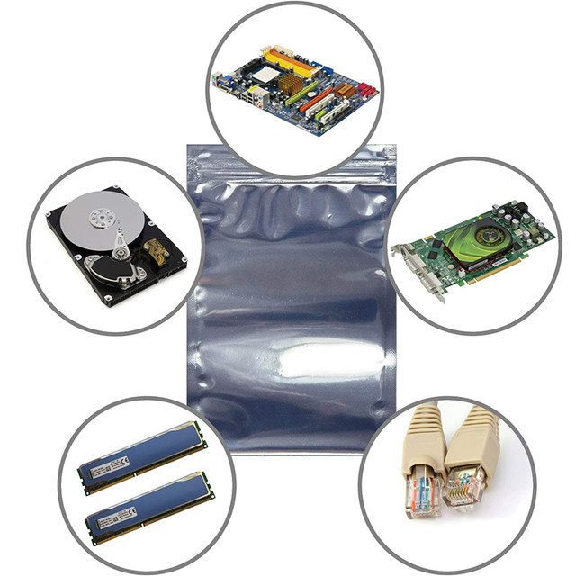
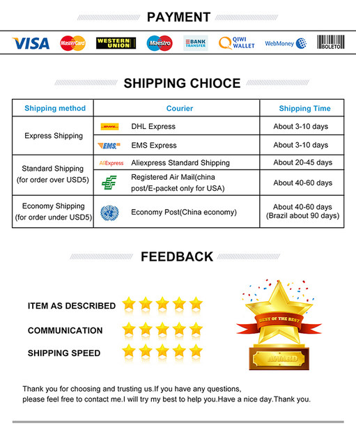

100PCS Antistatic Bags: Antistatic Bags, which can be used to store all your electronic parts and gadgets.
Semi-transparent Design: These antistaic bags are semi-transparent . They are resealable and you can easily see the contents inside.
High Quality: The bag is made of Polyethylene Terephthalate (PET) that is non-toxic and free from extraneous odor. It can prevent static electricity effectively.




